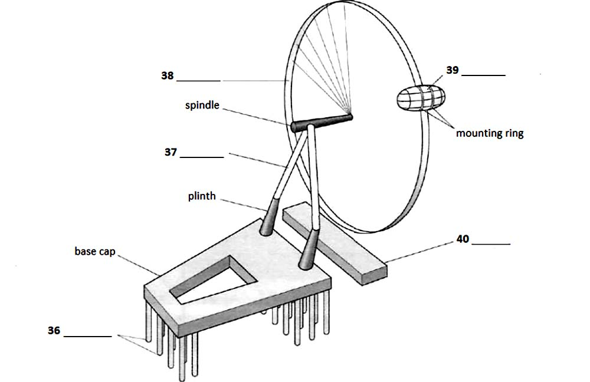

The London Eye
Today I want to focus on some of the major sights that attract tourists to cities, and I am going to begin with the London Eye. The London Eye is London’s newest major tourist attraction. It is a huge wheel designed to celebrate the Millennium year 2000, so it’s also known as the Millennium (Q31) Wheel. It stands at Millennium Pier, on the South Bank of the River Thames (Q32), close to the south end of Westminster Bridge, and within an easy walk of the Houses of Parliament and Big Ben. Though it looks like a huge Ferris wheel, the London Eye is no fairground thrill- ride, but a slow and stately way to experience London in a unique way. The London Eye is the UK’s most popular paid for visitor attraction, visited by over 3.5 million (Q33) people a year.
The Eye was built between 1998 and 2000. It seems remarkable that a site that has so quickly become a symbol of modem London has been around for such a short time! It took fully seven years from start of the design process to create the Eye. It was intended to stand for only a few years, but it proved to be such a popular attraction that the decision was made to make the wheel a permanent feature of the London landscape. The Eye was referred by British Airways (Q34), and for several years after opening it was referred to as the British Airways Millennium Wheel. Today the London Eye is under the ownership of the London Eye Company, a subsidiary of Merlin Entertainments Group Company.
Constructing The Merlin Entertainments London Eye was a massive challenge. It’s the tallest cantilevered observation wheel in the world, rising high above the London skyline at 135 metres (Q35). It was a piece of daring innovation and revolutionary design which combined the best of British design, architecture and engineering with an exceptional team of experts.

So, how is that great wheel held up? How did it get there? The starting point was, of course, the ground, and while parts of the wheel itself were still being constructed in various countries, tension piles (Q36) were being driven into the ground beside the River Thames. This was the first step, and once these were securely in place, a base cap was installed over them as a kind of lock, with two giant blimps pointing up, onto which a frame was attached, like a giant letter. The wheel was supported on huge A-frame (Q37) legs, made up of 2,200 tonnes of concrete on 44 concrete piles set 33 meters deep in the earth. All this took many months and incredible effort, but meant that the spindle could be installed, around which the great wheel would turn. The spindle itself was too large to cast as a single piece so instead was produced in eight smaller sections. Now the project really was in business, and the vast rim (Q38) with spokes like an outsized bicycle wheel could be brought in. 64 spoke cables, which are similar to bicycle spokes, hold the rim tight to the central spindle.
And the view was enhanced by the capsule design; unlike traditional ferris wheel designs that you might see at a local fairground, the passenger capsules (Q39) were not suspended under the wheel, they were set within a circular mounting ring attached to the outside surface of the wheel. What this means in practice is that travelers within the capsule have a full 360 degree panoramic view, unhindered by spokes of wheel struts. And the last thing to be built is the first thing the visitor encounters, the boarding platform (Q40) laid down underneath. The wheel does not usually stop to take on passengers; the rotation rate is slow enough to allow passengers to walk on and off the moving capsules at ground level. It is, however, stopped to allow disabled or elderly passengers time to embark and disembark safely.